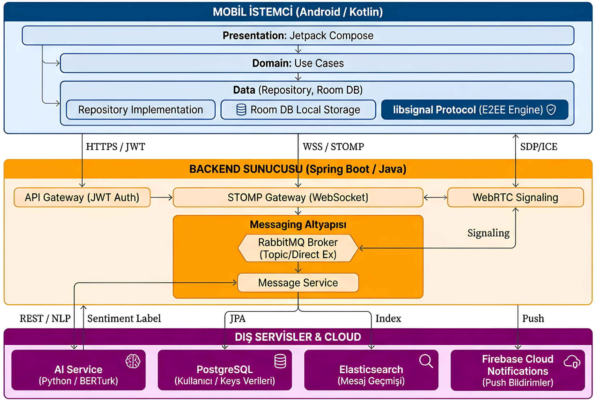
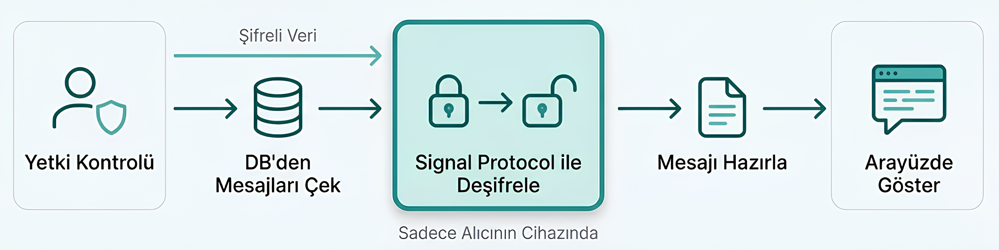
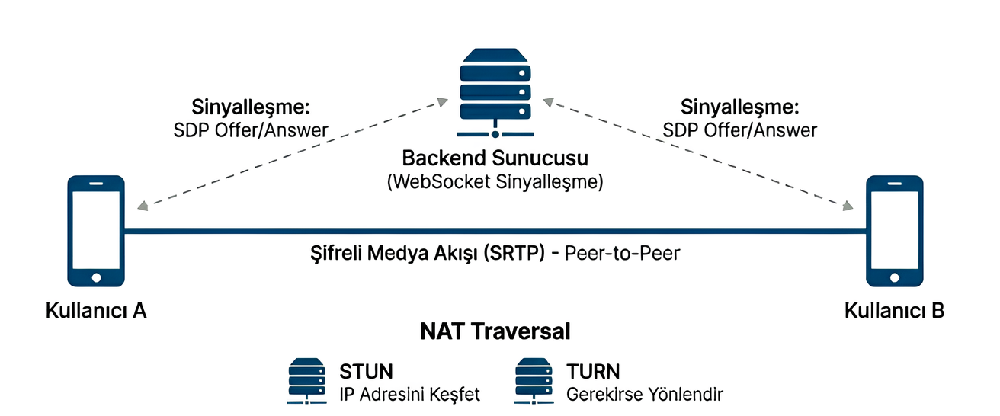
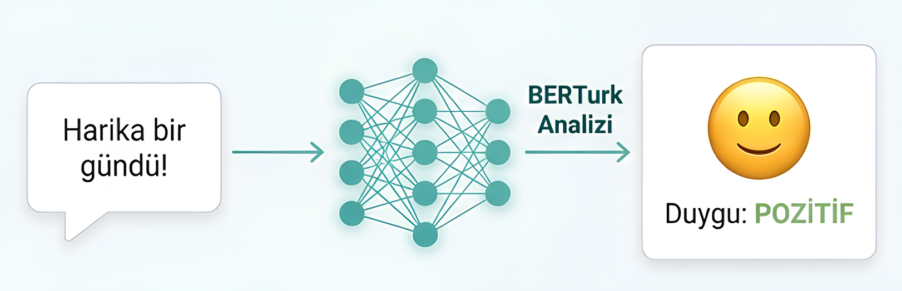

Sistem Mimarisi

Uçtan Uca Şifreleme (E2EE)

Signal Protokolü
X3DH ve Double Ratchet algoritmaları ile mesaj bazlı şifreleme anahtarları türetilerek tam gizlilik sağlanır.
WebRTC İletişim Mimarisi

P2P İletişim
Sesli ve görüntülü verilerin doğrudan cihazlar arası, düşük gecikmeli ve güvenli iletimini sağlar.
Yapay Zeka - Duygu Analizi

BERTurk ve Dijital Empati
Mesajlar anlık analiz edilerek duygusal ton (Pozitif, Negatif,
Nötr) belirlenir ve geri bildirim sunulur.